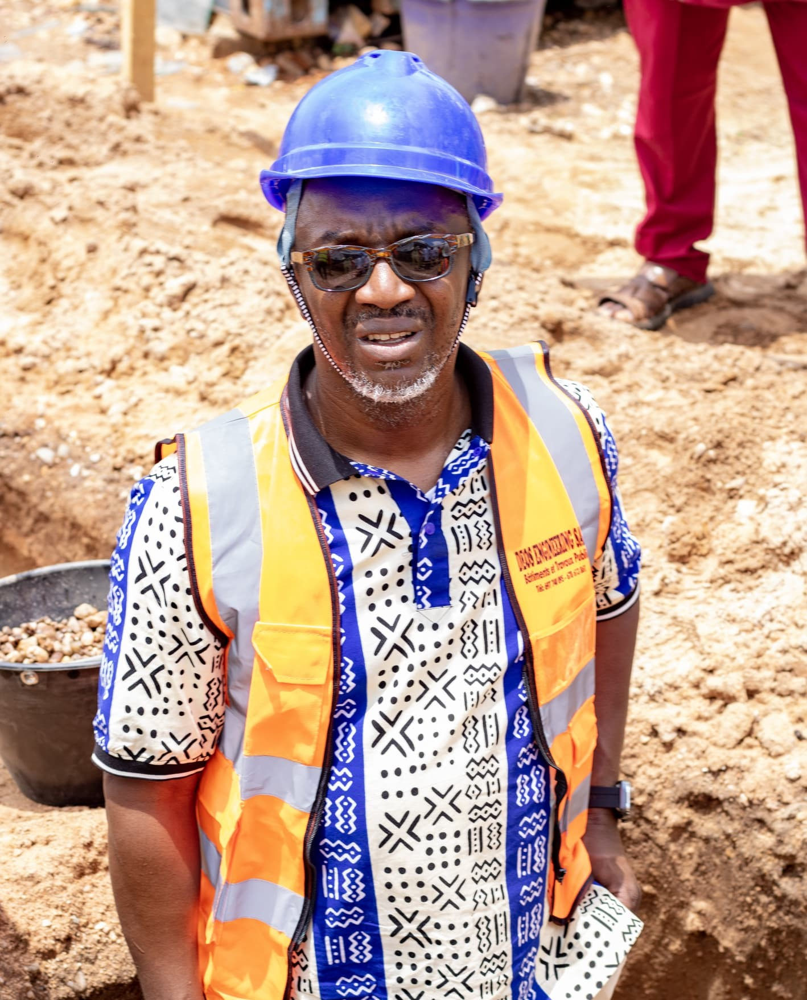

À la croisée de la réflexion,
du leadership et de la foi
William Dounla est économiste de formation, titulaire d'un Master en Politiques et Négociation Commerciale (Université de Yaoundé II-Soa). Fort de plus de quinze années d'expérience à des postes de direction, il a exercé notamment comme Directeur Administratif et Financier au sein des Œuvres Médicales de la Mission du Plein Évangile au Cameroun.
Formé au leadership au Haggai Institute (États-Unis), il a développé une conviction que ses années de terrain n'ont fait que renforcer : les organisations chrétiennes ont besoin, autant que les entreprises, de gouvernance solide, de gestion transparente et de structures capables de traverser les générations.
Parallèlement à ses responsabilités professionnelles, William Dounla s'est engagé dans la formation de jeunes leaders et de managers africains, convaincu que chaque expérience — victoire ou épreuve — recèle une leçon décisive pour qui veut grandir. Entrepreneur, formateur et passionné d'agriculture, il incarne lui-même la figure du leader multidimensionnel qu'il appelle de ses vœux.
Ce qui le distingue vraiment n'est pas seulement la finance ou l'administration. C'est sa capacité à donner du sens — à relier la technologie et l'humain, la foi et la modernité, la réflexion et l'action, la stratégie et la sensibilité.
"Gérer avec rigueur ne diminue pas la foi. Cela l'honore. Une œuvre confiée par Dieu mérite une gestion digne de cette confiance."